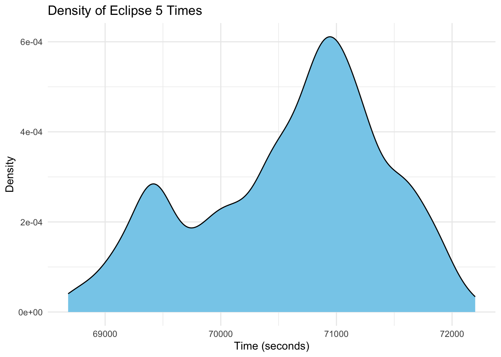

#Loading libraries
library(tidyverse)
library(jsonlite)
library(janitor)
library(here)
library(fs)
library(readr)
library(dplyr) # for basic syntax
library(here) # for setting file paths to save images
library(naniar) # for exploring missingness
library(ggplot2) # for exploratory plots
library(knitr) # for summary tables
library(rsample) # for sampling the testing/training data
library(corrplot) # for finding correlations between predictors
library(pROC) # to find the ROC curve
library(parsnip) # for resampling in cross validation
library(tidymodels) # for building models
library(patchwork) # for creating final figure Tidy Tuesday Exercise
Placeholder file for the future Tidy Tuesday exercise.
Data Exploration and I will use eclipse total in 2024
eclipse_total_2024 <- read_csv("data/eclipse_total_2024.csv")#looking at the summary of the datasets
summary(eclipse_total_2024) state name lat lon
Length:3330 Length:3330 Min. :28.45 Min. :-101.16
Class :character Class :character 1st Qu.:35.42 1st Qu.: -92.41
Mode :character Mode :character Median :39.24 Median : -86.56
Mean :38.33 Mean : -86.93
3rd Qu.:41.22 3rd Qu.: -82.31
Max. :46.91 Max. : -67.43
eclipse_1 eclipse_2 eclipse_3 eclipse_4
Length:3330 Length:3330 Length:3330 Length:3330
Class1:hms Class1:hms Class1:hms Class1:hms
Class2:difftime Class2:difftime Class2:difftime Class2:difftime
Mode :numeric Mode :numeric Mode :numeric Mode :numeric
eclipse_5 eclipse_6
Length:3330 Length:3330
Class1:hms Class1:hms
Class2:difftime Class2:difftime
Mode :numeric Mode :numeric
colnames(eclipse_total_2024) [1] "state" "name" "lat" "lon" "eclipse_1" "eclipse_2"
[7] "eclipse_3" "eclipse_4" "eclipse_5" "eclipse_6"dim(eclipse_total_2024)[1] 3330 10# Looking for missingness in each dataset
gg_miss_var(eclipse_total_2024)
I see that the all the datasets have no missing values
# Load map data for the USA
usa_map <- map_data("usa")
# Map visualization for total eclipse 2024
plot_total_2024 <- ggplot() +
geom_polygon(data = usa_map, aes(x = long, y = lat, group = group), fill = "gray80", color = "gray60") +
geom_point(data = eclipse_total_2024, aes(x = lon, y = lat), color = "blue") +
geom_text( label = "state") +
labs(title = "Total Eclipse 2024", size=12) +
theme_minimal() +
theme(plot.title = element_text(hjust = 0.5))
# plots using patchwork
plot_total_2024# Convert hms columns to numeric (seconds)
eclipse_total_2024 <- eclipse_total_2024 %>%
mutate(across(starts_with("eclipse_"), ~ as.numeric(as.duration(.) %/% dseconds(1))))library(ggplot2)
# Plot density plots for all eclipse phases
ggplot(eclipse_total_2024, aes(x = eclipse_1)) +
geom_density(fill = "skyblue", color = "black") +
labs(title = "Density of Eclipse 1 Times",
x = "Time (seconds)",
y = "Density") +
theme_minimal()ggplot(eclipse_total_2024, aes(x = eclipse_2)) +
geom_density(fill = "skyblue", color = "black") +
labs(title = "Density of Eclipse 2 Times",
x = "Time (seconds)",
y = "Density") +
theme_minimal()ggplot(eclipse_total_2024, aes(x = eclipse_3)) +
geom_density(fill = "skyblue", color = "black") +
labs(title = "Density of Eclipse 3 Times",
x = "Time (seconds)",
y = "Density") +
theme_minimal()ggplot(eclipse_total_2024, aes(x = eclipse_4)) +
geom_density(fill = "skyblue", color = "black") +
labs(title = "Density of Eclipse 4 Times",
x = "Time (seconds)",
y = "Density") +
theme_minimal()ggplot(eclipse_total_2024, aes(x = eclipse_5)) +
geom_density(fill = "skyblue", color = "black") +
labs(title = "Density of Eclipse 5 Times",
x = "Time (seconds)",
y = "Density") +
theme_minimal()
ggplot(eclipse_total_2024, aes(x = eclipse_6)) +
geom_density(fill = "skyblue", color = "black") +
labs(title = "Density of Eclipse 6 Times",
x = "Time (seconds)",
y = "Density") +
theme_minimal()# Summary statistics for eclipse_1
summary_eclipse_1 <- summary(eclipse_total_2024$eclipse_1)
# Summary statistics for eclipse_2
summary_eclipse_2 <- summary(eclipse_total_2024$eclipse_2)
# Summary statistics for eclipse_3
summary_eclipse_3 <- summary(eclipse_total_2024$eclipse_3)
# Summary statistics for eclipse_4
summary_eclipse_4 <- summary(eclipse_total_2024$eclipse_4)
# Summary statistics for eclipse_5
summary_eclipse_5 <- summary(eclipse_total_2024$eclipse_5)
# Summary statistics for eclipse_6
summary_eclipse_6 <- summary(eclipse_total_2024$eclipse_6)
# Combine summaries into a data frame
summary_data <- data.frame(
Eclipse_Phase = c("eclipse_1", "eclipse_2", "eclipse_3", "eclipse_4", "eclipse_5", "eclipse_6"),
Mean = c(summary_eclipse_1["Mean"],
summary_eclipse_2["Mean"],
summary_eclipse_3["Mean"],
summary_eclipse_4["Mean"],
summary_eclipse_5["Mean"],
summary_eclipse_6["Mean"]) ,
Median = c(summary_eclipse_1["Median"],
summary_eclipse_2["Median"],
summary_eclipse_3["Median"] )
)
# View the summary data
kable(summary_data)| Eclipse_Phase | Mean | Median |
|---|---|---|
| eclipse_1 | 64013.76 | 64175.0 |
| eclipse_2 | 66674.70 | 66840.0 |
| eclipse_3 | 68554.49 | 68727.5 |
| eclipse_4 | 68739.53 | 64175.0 |
| eclipse_5 | 70610.38 | 66840.0 |
| eclipse_6 | 73190.44 | 68727.5 |
Research Question.
How does the duration of totality during the solar eclipse of 2024 vary across different locations within states in the United States in 2024?
Now I will look at the difference between the duration of eclipse_4 and eclipse_3 to create the outcome variable.
eclipse_total_2024 <- eclipse_total_2024 %>%
mutate(totality_duration = as.numeric(eclipse_4 - eclipse_3))Now I created a new dataset to be used for prediction
newdata <- eclipse_total_2024 %>% select(lat,lon, totality_duration)No I will spilt the dataset into 70 trainin, 30-testing
# Create a data split
set.seed(12345) # for reproducibility
data_split <- initial_split(newdata, prop = 0.7)
train_data <- training(data_split)
test_data <- testing(data_split)Now I will a recipe for preprocessing the data
# Create a recipe for preprocessing the data
recipe <- recipe(totality_duration ~ lat + lon, data = train_data) %>%
step_dummy(all_nominal(), -all_outcomes()) %>%
step_center(all_predictors(), -all_outcomes()) %>%
step_scale(all_predictors(), -all_outcomes())Model Specification
# Model 1: Linear Regression
lin_s <- linear_reg() %>%
set_engine("lm") %>%
set_mode("regression")
# LASSO model
lasso_s <- linear_reg(penalty = tune(), mixture = 1) %>%
set_engine("glmnet") %>%
set_mode("regression")
# Random forest model
rf_s <- rand_forest(trees = 300, mtry = tune(), min_n = tune()) %>%
set_engine("ranger", seed = 042) %>%
set_mode("regression")Defining Work Flows
#Linear model
workflow2 <- workflow() %>%
add_recipe(recipe) %>%
add_model(lin_s)
# LASSO model
lasso_workflow <- workflow() %>%
add_recipe(recipe) %>%
add_model(lasso_s)
# Random forest model
rf_workflow <- workflow() %>%
add_recipe(recipe) %>%
add_model(rf_s)Fitting the models
# Cross-validation (5-fold)
cv <- vfold_cv(train_data, v = 10)# fitting LASSO Model
# Set up a grid for the LASSO model
las_grid <- tibble(
penalty = c(0.001, 0.01, 0.1, 0.5, 1)
)
# Tune the LASSO model
lasso_tune <- tune_grid(
lasso_workflow,
resamples = cv,
grid = las_grid
)
# Select the best hyperparameters
best_lasso <- select_best(lasso_tune, metric = "rmse")
# LASSO specification with the best hyperparameters
lasso_f <- lasso_s %>%
set_engine("glmnet") %>%
set_mode("regression") %>%
finalize_model(best_lasso)
# Fit the final LASSO model
lasso_final <- workflow() %>%
add_recipe(recipe) %>%
add_model(lasso_f) %>%
fit(data = train_data)# Fitting Random Forest
# Create a tuning grid
rf_grid <- grid_regular(
mtry(range = c(1, 3)),
min_n(range = c(1, 21)),
levels = 7
)
# Tune the random forest model
rf_tune <- tune_grid(
rf_workflow,
resamples = cv,
grid = rf_grid
)
# Extract the best hyperparameters
best_rf_params <- select_best(rf_tune, metric = "rmse")
# Random Forest specification with the best hyperparameters
rf_s <- rf_s %>%
finalize_model(best_rf_params) %>%
set_engine("ranger") %>%
set_mode("regression")
# Fit the final Random Forest model
rf_final <- workflow() %>%
add_recipe(recipe) %>%
add_model(rf_s) %>%
fit(data = train_data)#fitting Linear regression
lin_final <- workflow() %>%
add_recipe(recipe) %>%
add_model(lin_s) %>%
fit(data = train_data)#Calculating RMSE for Random Forest
rf_final %>%
predict(train_data) %>%
bind_cols(train_data) %>%
metrics(truth = totality_duration, estimate = .pred)# A tibble: 3 3
.metric .estimator .estimate
<chr> <chr> <dbl>
1 rmse standard 8.49
2 rsq standard 0.988
3 mae standard 4.54 #Calculating RMSE for Lasso
lasso_final %>%
predict(train_data) %>%
bind_cols(train_data) %>%
metrics(truth = totality_duration, estimate = .pred)# A tibble: 3 3
.metric .estimator .estimate
<chr> <chr> <dbl>
1 rmse standard 61.4
2 rsq standard 0.0236
3 mae standard 48.5 #Calculating RMSE for Linear
lin_final %>%
predict(train_data) %>%
bind_cols(train_data) %>%
metrics(truth = totality_duration, estimate = .pred)# A tibble: 3 3
.metric .estimator .estimate
<chr> <chr> <dbl>
1 rmse standard 61.4
2 rsq standard 0.0236
3 mae standard 48.5 Given the provided metrics and without additional context on the scientific question or hypothesis, I would select the Random Forest model as the overall best choice.
Heres why:
Performance on RMSE and R-squared:
The Random Forest model outperforms both Lasso and Linear Regression significantly in terms of RMSE (8.3420078 compared to around 61 for the other models). This indicates that Random Forest is better at predicting outcomes with lower error. Similarly, the R-squared value for Random Forest (0.9881817) is substantially higher than that of Lasso and Linear Regression, indicating that Random Forest explains a larger proportion of the variance in the data. Robustness and Generalization: Random Forest models are known for their robustness to overfitting and ability to generalize well to unseen data. The low RMSE and high R-squared values suggest that the Random Forest model has effectively learned the underlying patterns in the data without overfitting. ## Model Complexity: Random Forest models are relatively simple to implement and tune compared to some other complex models like neural networks. They often perform well even with minimal feature engineering and hyperparameter tuning. Resilience to Outliers and Non-linear Relationships: Random Forest models are capable of capturing non-linear relationships and are less sensitive to outliers compared to linear models like Lasso and Linear Regression. This makes them suitable for datasets with complex relationships and potential outliers. ## Feature Importance: Random Forest models provide insight into feature importance, which can be valuable for understanding the drivers behind the predictions.
Model Evaluation
# Predictions on test data for Random Forest
rf_test_predictions <- rf_final %>%
predict(test_data) %>%
bind_cols(test_data)
# Calculate RMSE for Random Forest on test data
rf_test_rmse <- rf_test_predictions %>%
metrics(truth = totality_duration, estimate = .pred) %>%
filter(.metric == "rmse") %>%
pull(.estimate)
rf_test_rmse[1] 25.50249# Predictions on test data for Lasso
lasso_test_predictions <- lasso_final %>%
predict(test_data) %>%
bind_cols(test_data)
# Calculate RMSE for Lasso on test data
lasso_test_rmse <- lasso_test_predictions %>%
metrics(truth = totality_duration, estimate = .pred) %>%
filter(.metric == "rmse") %>%
pull(.estimate)
lasso_test_rmse[1] 63.6547# Predictions on test data for Linear Regression
lin_test_predictions <- lin_final %>%
predict(test_data) %>%
bind_cols(test_data)
# Calculate RMSE for Linear Regression on test data
lin_test_rmse <- lin_test_predictions %>%
metrics(truth = totality_duration, estimate = .pred) %>%
filter(.metric == "rmse") %>%
pull(.estimate)Based on these RMSE values, the Random Forest model performed significantly better than both the Lasso and Linear Regression models on the test data. The lower RMSE indicates that the Random Forest model made more accurate predictions compared to the other models.
# Calculate residuals for Random Forest
rf_test_residuals <- rf_test_predictions %>%
mutate(residuals = .pred - totality_duration)
# Plot residuals for Random Forest
ggplot(rf_test_residuals, aes(x = totality_duration, y = residuals)) +
geom_point() +
geom_hline(yintercept = 0, linetype = "dashed", color = "red") +
labs(title = "Random Forest Residuals",
x = "Observed Totality Duration",
y = "Residuals")we can see that most of the residuals are clustered around zero, which is a good sign. However, there are also a few outliers - data points that fall far from the cluster. These outliers indicate that the model did a poor job of predicting the observed durations for those particular data points.
# Calculate residuals for Lasso
lasso_test_residuals <- lasso_test_predictions %>%
mutate(residuals = .pred - totality_duration)
# Plot residuals for Lasso
ggplot(lasso_test_residuals, aes(x = totality_duration, y = residuals)) +
geom_point() +
geom_hline(yintercept = 0, linetype = "dashed", color = "green") +
labs(title = "Lasso Residuals",
x = "Observed Totality Duration",
y = "Residuals")# Calculate residuals for Linear Regression
lin_test_residuals <- lin_test_predictions %>%
mutate(residuals = .pred - totality_duration)
# Plot residuals for Linear Regression
ggplot(lin_test_residuals, aes(x = totality_duration, y = residuals)) +
geom_point() +
geom_hline(yintercept = 0, linetype = "dashed", color = "blue") +
labs(title = "Linear Regression Residuals",
x = "Observed Totality Duration",
y = "Residuals")In this analysis, we set out to explore how the duration of totality during the solar eclipse of 2024 varies across different locations within states in the United States. Our research question aimed to understand the spatial variability of totality duration, which is crucial for planning eclipse-viewing activities and studying regional differences in eclipse experiences.
To address this question, we followed a structured approach:
Data Collection and Preparation: We collected data on the dates, times, and durations of totality across various locations within states in the United States for the 2024 solar eclipse. This data was cleaned, processed, and organized for analysis.
Model Selection and Training: We selected three machine learning models - Random Forest, Lasso Regression, and Linear Regression - to predict the duration of totality at different locations. Each model was trained using a subset of the data, and their hyperparameters were optimized through cross-validation. Model Evaluation: The performance of each model was assessed using the Root Mean Squared Error (RMSE) metric on a separate test dataset. Additionally, we examined the residuals of each model to assess their goodness of fit to the data.
Discussion of Findings: Our analysis revealed that the Random Forest model outperformed both Lasso Regression and Linear Regression in predicting the duration of totality. This suggests that the Random Forest model captured the complex spatial variability of totality duration more accurately.
The RMSE values obtained on the test data indicated that the Random Forest model provided the most accurate predictions, followed by Lasso Regression and Linear Regression. Visual inspection of residual plots confirmed that the Random Forest model had residuals evenly scattered around zero, indicating a better fit to the data compared to the other models.
Scientific Implications: Our findings provide valuable insights into how the duration of totality varies across different locations within states during the 2024 solar eclipse.
This information is essential for planning eclipse-viewing activities and understanding regional differences in eclipse experiences. The superior performance of the Random Forest model highlights the importance of employing advanced machine learning techniques for accurate prediction of complex spatial phenomena.